1.2. Sprites#
Zoals gezegd is een zwart venster niet heel spannend. Laten we er daarom snel wat leven in brengen, door onze hoofdrolspeler te introduceren: een roze alien.
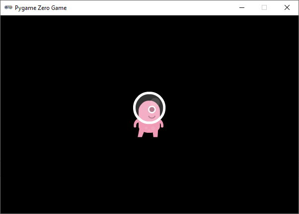
De alien is een afbeelding (Engels: image) die we straks uiteraard gaan laten bewegen. Afbeeldingen van karakters en objecten in games noemen we sprites.
1.2.1. Images map#
Voordat je hem kunt gebruiken, moet je de alien sprite downloaden en in de juiste map plaatsen. Volg onderstaande stappen om dat te doen.
Klik in Mu editor op de knop Images. Daardoor creëert Mu editor zelf een map met de naam
imagesin jealienmap. Er wordt automatisch een Windows Verkenner geopend waarin je dat kunt zien.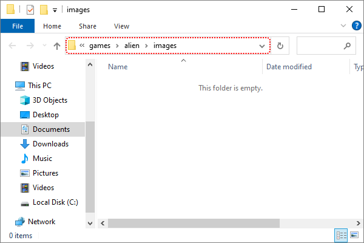
Alle sprites die je gebruikt in een game moeten in deze map staan, anders kan Mu editor ze niet vinden.
Download de
alien sprite.Het gedownloade bestand komt waarschijnlijk terecht in je
Downloadsmap. Verplaats het bestand met behulp van de Windows Verkenner naar dealien/imagesmap. Dit kan op verschillende manieren, bijvoorbeeld door het bestand van het ene venster naar het andere te verslepen. Je kunt ook het bestand in deDownloadsmap selecteren, vervolgens Ctrl + X gebruiken om het te knippen en Ctrl + V in dealien/imagesmap om het te plakken.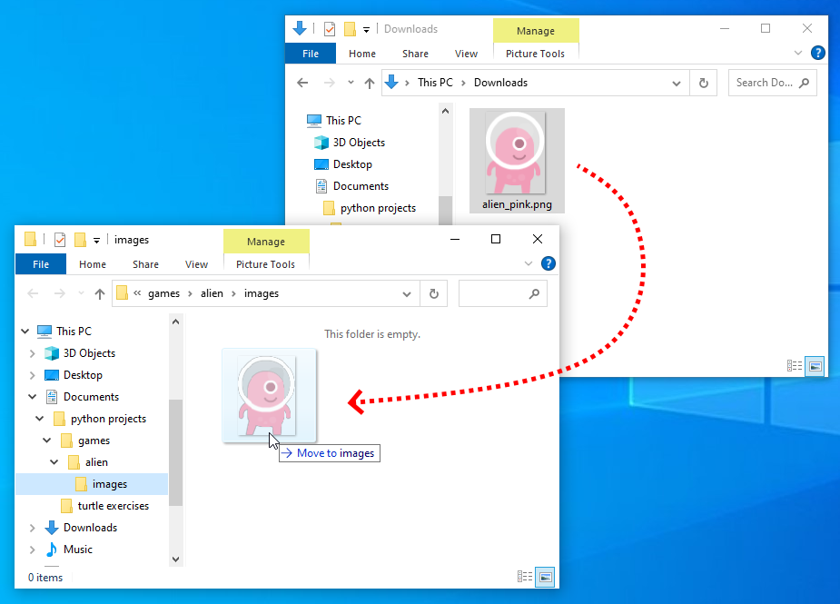
Tip
In plaats van met de linker muisknop kun je ook met de rechter muisknop op de downloadlink klikken. Als je vervolgens Link opslaan als selecteert, kun je de sprite direct in de
alien/imagesmap opslaan. Je hoeft hem dan niet meer uit jeDownloadsmap te halen.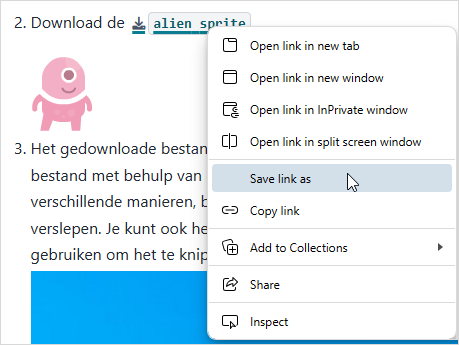
Als je dit goed hebt gedaan, dan bevindt het bestand
alien_pink.pngzich nu op de juiste plek.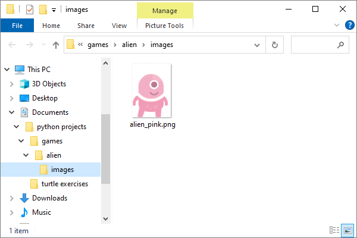
Ziet het er bij jou iets anders uit? Je kunt in het lint van de Verkenner het tablad Beeld selecteren en daar kiezen voor grotere icoontjes en het tonen van bestandsextensies. Een bestandsextensie is de toevoeging aan een bestandsnaam die achter de punt staat. Dus van het bestand
alien_pink.pngis de naamalien_pinken de extensiepng.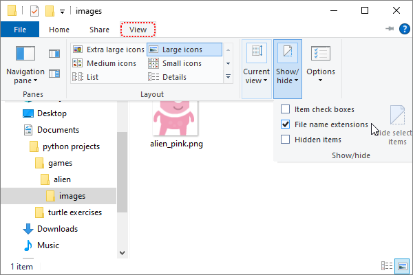
{kind=link}
Het is heel belangrijk dat alien_pink.png in de alien/images map staat. Als je het bestand in een andere map plaatst, kan Mu editor het niet vinden en zal je game niet werken.
1.2.2. Actors#
Om de alien sprite in je game te laten verschijnen, moet je drie dingen doen:
Een
Actorvariabele aanmaken.De
draw()functie van je game definiëren.De
draw()functie van deActorvariabele aanroepen.
In de volgende code zie je deze stappen in de regels 5 tot en met 10.
Op regel 6 wordt met alien = Actor('alien_pink') een Actor variabele aangemaakt met de naam alien. Tussen de haakjes staat de naam van de sprite die we willen gebruiken voor deze Actor.
Op regel 9 definiëren we de draw() functie. Elk Pygame Zero programma moet zo’n functie bevatten. Pygame roept deze functie automatisch aan wanneer het game venster opnieuw moet worden getekend. Als we de sprite straks laten bewegen, wordt draw() heel vaak aangeroepen, telkens wanneer de sprite een stukje is verplaatst. Let op: je programma kan niet meer dan één draw() functie hebben; alle tekenwerk moet door deze ene functie worden geregeld.
Op regel 10 roepen we alien.draw() aan. Dat is de draw() functie van de alien Actor (en dus een andere dan de draw() functie die we op regel 9 definieerden). Elke Actor in Pygame Zero heeft een eigen voorgeprogrammeerde draw() functie die ervoor zorgt dat de sprite wordt getekend.
Run je code om te zien of het werkt.
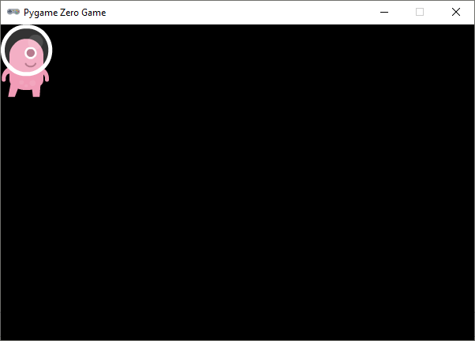
1.2.3. Positionering#
Op dit moment staat de alien linksboven in het venster. Om de sprite op een andere positie te plaatsen, gaan we coördinaten gebruiken. Hieronder lees je hoe dat werkt.
In regel 2 en 3 van alien.py stelden we de breedte en de hoogte van ons game venster in op 600 en 400 pixels:
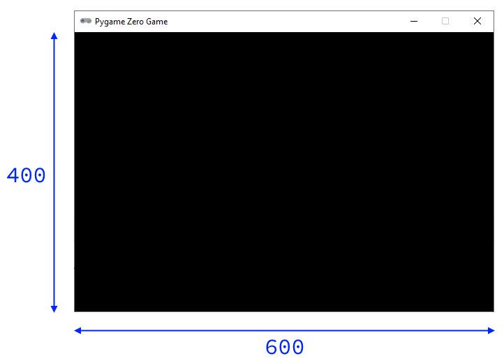
Elke pixel in dit venster heeft twee coördinaten:
x-coördinaat: de horizontale afstand tot de linker bovenhoek.
y-coördinaat: de verticale afstand tot de linker bovenhoek.
Vaak schrijf je de twee coördinaten van een pixel tussen haakjes, gescheiden door een komma. Dus (200, 100) is de pixel met x-coördinaat 200 en y-coördinaat 100. De hoekpunten van ons venster hebben dus de coördinaten (0, 0), (600, 0), (0, 400) en (600, 400).
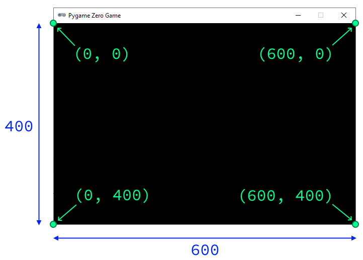
De pixel die vanuit de linker bovenhoek 200 naar rechts en 100 naar beneden ligt, heeft de coördinaten (200, 100):
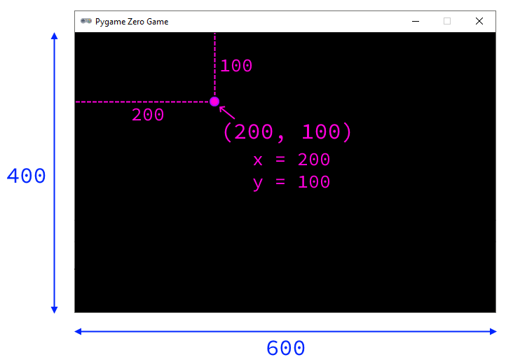
Verschillende coördinatenstelsels
Let op het verschil tussen het coördinatenstelsel in Pygame Zero en dat in de turtle module. In de turtle module is (0, 0) het midden van het venster. In Pygame Zero is (0, 0) de linker bovenhoek. Bovendien is de positieve richting van de y-as in de turtle module naar boven en in Pygame Zero naar beneden!
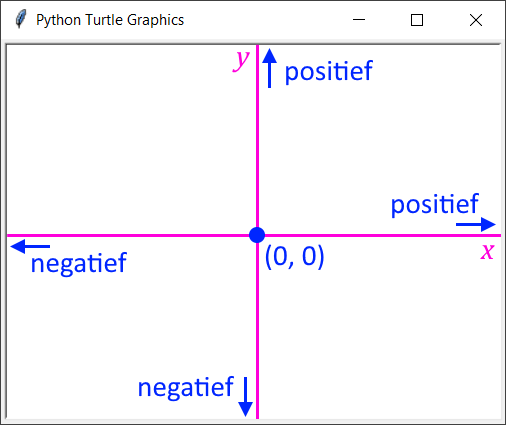
Coördinatenstelsel turtle
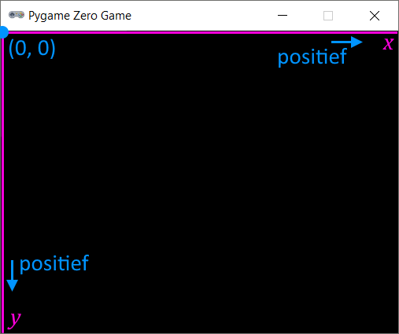
Coördinatenstelsel Pygame
Laten we de alien eens op dit punt (200, 100) positioneren:
Run de code om te controleren of de alien inderdaad op de juiste positie staat.
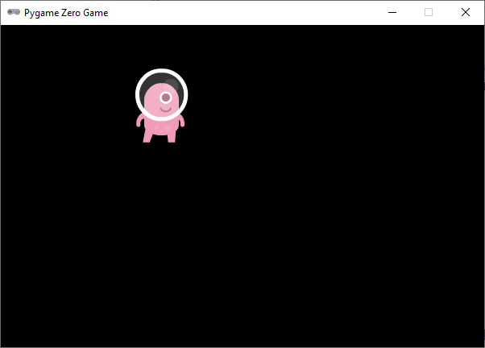
Opdracht 01
Wijzig de code in alien.py zodat de alien op 500 pixels van de linkerzijde en 300 pixels van de bovenzijde van het venster staat.
Oplossing
Opdracht 02
Wijzig de code in alien.py zodat de alien op 150 pixels van de rechterzijde en 50 pixels van de onderzijde van het venster staat.
Opdracht 03
Wijzig de code in alien.py zodat de alien exact in het midden van het venster staat.
1.2.3.1. Vensterafmetingen gebruiken#
Wellicht heb je de opdrachten 02 en 03 als volgt opgelost:
Met deze code komt de alien inderdaad op de juiste plek terecht. Het is echter beter om bij deze opdrachten de vensterafmetingen WIDTH en HEIGHT te gebruiken voor het positioneren van de alien:
Vraag 01
Waarom is het beter alien.x = WIDTH / 2 te gebruiken dan alien.x = 300 om de sprite horizontaal in het midden van het venster te positioneren?
Antwoord
Met alien.x = WIDTH / 2 is je code flexibeler. Stel dat je later besluit om de breedte van je venster te vergroten naar 800 pixels, dan komt de sprite nog steeds in het midden terecht. Had je alien.x = 300 gebruikt, dan zou de sprite niet meer in het midden staan.
Opdracht 04
Wijzig de code in alien.py zodat de alien op een kwart van de vensterbreedte en de helft van de vensterhoogte staat.
Oplossing
1.2.3.2. Ankerpunten#
Opdracht 05
Plaats de alien in de rechter onderhoek van het venster. Gebruik niet de getallen 600 en 400, maar de constanten WIDTH en HEIGHT.
Oplossing
Als je de vorige opdracht goed hebt uitgevoerd, dan was dit het resultaat:
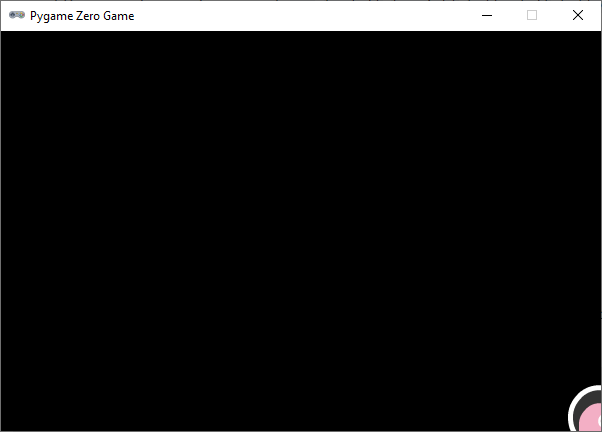
Dat is waarschijnlijk niet helemaal wat je voor ogen hebt wanneer je de alien in de rechter onderhoek wilt positioneren. Kijk even goed naar de onderstaande afbeeldingen om de oorzaak te begrijpen van deze ‘fout’.
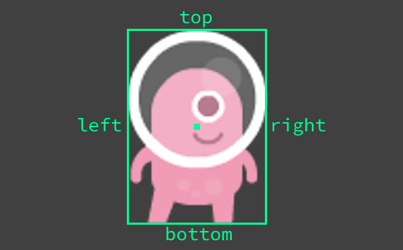
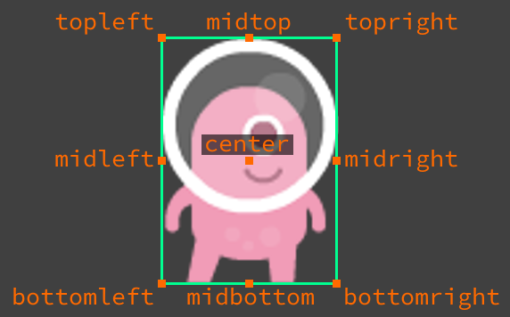
De alien sprite heeft een breedte en een hoogte. Wanneer je alien.x en alien.y een waarde geeft, zorgt Pygame ervoor dat het middelpunt (center) van de sprite op die positie terecht komt. Het middelpunt is namelijk het standaard ankerpunt van een sprite. Wij willen echter graag dat het punt rechtsonder (bottomright) op de coördinaten (600, 400) terecht komt. Dit kun je doen door regels 7 en 8 van je programma als volgt aan te passen:
Je kunt het ook in één regel doen:
Nu staat de alien precies op de plek die we wilden:
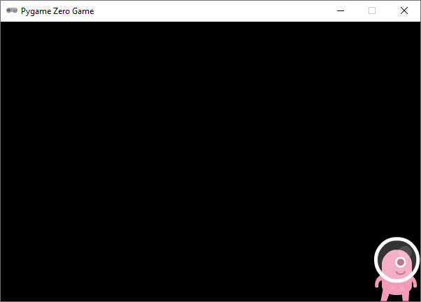